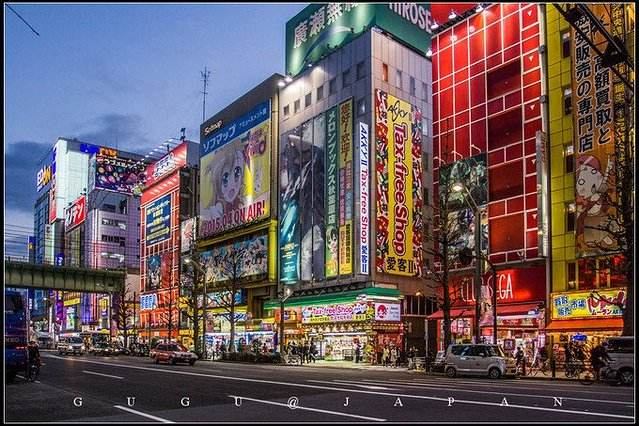

I would like to visit Japan. It is a country which has lots of animations fans. And I love sushi and other Japanese food.
The person who I admire is Mizuki Nana. She is a Japanese voice actress and singer.
When I was in primary school, I watched lot of the animation which she is the main voice actress. Also I love her songs so much, her voice is so powerful.